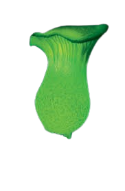
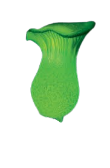

Descripción morfológica
Neonothopanus gardneri, conocido como "hongo fantasma" o "coco de luz", es una especie bioluminiscente de la familia Omphalotaceae. Sus cuerpos fructíferos presentan un sombrero convexo de 2-8 cm de diámetro, de color blanco cremoso a amarillo pálido, con superficie viscosa en condiciones húmedas. Las láminas son decurrentes y del mismo color que el sombrero, emitiendo una intensa luz verde-azulada (λmax = 530 nm) en la oscuridad. El pie es central, fibroso y hueco en la madurez.
Características únicas
- Bioluminiscencia: Emite luz continua mediante la reacción luciferina-luciferasa (similar a las luciérnagas), más intensa en láminas (hasta 20 lux a 10 cm).
- Cutícula: Capa gelatinosa transparente que difunde la luz como una "pantalla natural".
- Esporas: Elipsoidales, lisas, de 5-7 × 3-4 µm, no luminiscentes.
- Micelio: También bioluminiscente, formando redes "estelares" en la madera.
Distribución y hábitat
Endémico de los bosques húmedos tropicales de Brasil (especialmente en la Mata Atlántica) y Costa Rica. Crece sobre troncos en descomposición de palmeras (Cocos nucifera) y árboles del género Euterpe. Requiere humedad relativa >90% y temperaturas estables (22-28°C). Su presencia indica ecosistemas primarios bien conservados, con baja contaminación lumínica.
Condiciones críticas
- Sustrato: Madera en estado intermedio de descomposición (ni muy dura ni pulverulenta).
- Oscuridad: La bioluminiscencia se inhibe con exposición a luz artificial constante.
- Microbioma asociado: Bacterias simbióticas (Pseudomonas spp.) que potencian la luminiscencia.
Ciclo de vida y bioquímica luminiscente
Hongo saprótrofo que coloniza madera muerta mediante micelio rizomórfico luminiscente. El ciclo luceferina-luciferasa depende de: 1) NADPH como cofactor, 2) oxígeno molecular, y 3) una proteína transportadora especial (Ngard-1). La emisión de luz es regulada por un reloj circadiano sincronizado con las fases lunares (mayor intensidad en noches sin luna). Cada cuerpo fructífero vive 3-5 noches, liberando esporas al cuarto día.
Etapas de desarrollo
- Fase vegetativa: Micelio forma "anillos de luz" en la madera durante meses.
- Inducción: Cambios en humedad y temperatura desencadenan formación de primordios.
- Maduración: Los cuerpos fructíferos completan su desarrollo en 48 horas.
Importancia ecológica y aplicaciones
- 🦇 Atracción de dispersores: La luz atrae insectos nocturnos (escarabajos, polillas) que transportan esporas.
- 🧪 Biotecnología: Genes de luciferasa usados en marcadores celulares y biosensores médicos.
- 🌌 Ecoturismo: Especie emblemática en tours de observación de bioluminiscencia en Bahia (Brasil).
- 🔍 Bioindicador: Sensibilidad a metales pesados lo hace útil para monitorear contaminación forestal.
Datos fascinantes
- Historia: Documentado por primera vez en 1840 por el botánico George Gardner, quien lo confundió con flores luminosas.
- Eficiencia energética: Convierte el 98% de la energía química en luz (vs. 5% en bombillas incandescentes).
- Cultura local: Leyendas Tupí lo llaman "ipê-tororó" (árbol que llora luz), asociado a espíritus del bosque.
- Mimetismo: Su luz imita la de las estrellas para guiar animales hacia la madera en descomposición.
Conservación y amenazas
Catalogado como Vulnerable por la IUCN debido a:
- Deforestación: Pérdida del 85% de la Mata Atlántica original.
- Contaminación lumínica: Inhibe su señal reproductiva y desorienta insectos polinizadores.
- Colección indiscriminada: Turistas arrancan ejemplares para fotografías, dañando el micelio.
Iniciativas de protección
- Reservas privadas como Serra Bonita (Bahia) protegen colonias reproductivas.
- Programas de "cultivo sombra" para reintroducción usando sustratos de coco.
- Regulación de visitas nocturnas con luces ámbar (no afectan la bioluminiscencia).
Técnicas de observación responsable
- Adaptación ocular: Pasar 30 minutos en oscuridad total antes de la observación.
- Iluminación: Usar linternas con filtro rojo (<600 nm) para no interferir.
- Fotografía: Exposiciones largas (30+ seg) a ISO 1600-3200 captan mejor el efecto.